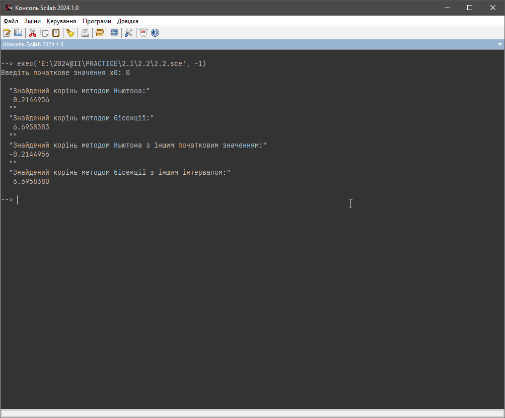
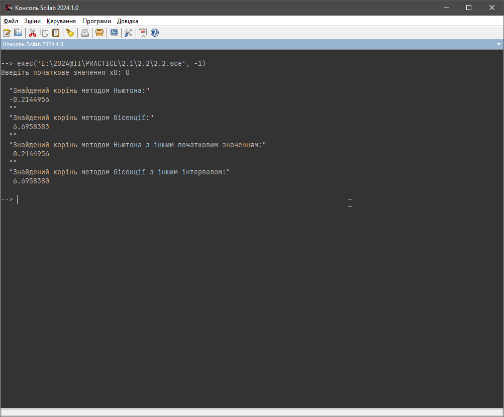

Моя Ознайомча практика 2024
Завдання 2 - ЧИСЕЛЬНІ МЕТОДИ
Ознайомитися з одним із чисельних методів та виконати його реалізацію мовою програмування високого рівня (за винятком Basic, Pascal, Fortran), засобами програмування Scilab та перевірити правильність отриманих програмних рішень за допомогою інших засобів Scilab.
ВАРІАНТ 9
Чисельний метод: Метод дотичних / Ньютона
Нелінійне рівняння:\[x^3 - 3 * x^2 - 24 * x - 5 = 0\]
Перевірка роботи
Візьмемо деякі значення x0 для тестування (таблиця 1):
| № | x0 | Очікуваний результат | |
|---|---|---|---|
| Scilab | C# | ||
| 1 | 5 | 6.6958380 | 6,6958380 |
| 2 | 3 | -3.4813424 | -3,4813424 |
| 3 | -999 | -3.4813424 | -3,4813424 |
| 4 | 4 | Inf | 4 (inf) |
| 5 | 0 | -0.2144956 | -0,2144956 |
Скріншоти роботи (рисунок 1 - 10):
 Рисунок 1. Тест 1 Scilab
Рисунок 1. Тест 1 Scilab
 Рисунок 2. Тест 1 C#
Рисунок 3. Тест 2 Scilab
Рисунок 2. Тест 1 C#
Рисунок 3. Тест 2 Scilab
 Рисунок 4. Тест 2 C#
Рисунок 4. Тест 2 C#
 Рисунок 5. Тест 3 Scilab
Рисунок 6. Тест 3 C#
Рисунок 7. Тест 4 Scilab
Рисунок 5. Тест 3 Scilab
Рисунок 6. Тест 3 C#
Рисунок 7. Тест 4 Scilab
 Рисунок 8. Тест 4 C#

Рисунок 9. Тест 5 Scilab
Рисунок 8. Тест 4 C#

Рисунок 9. Тест 5 Scilab
 Рисунок 10. Тест 5 C#
Рисунок 10. Тест 5 C#
Висновок
Порівнюючи отримані результаті у Scilab та C#, відповіді ідентичні в усіх тестах. Можливі похибки можуть виникнути при 9-10 знаках після коми.